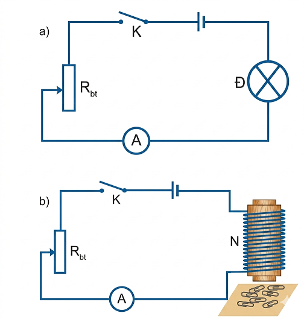
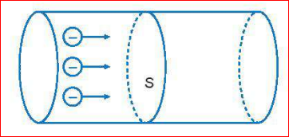
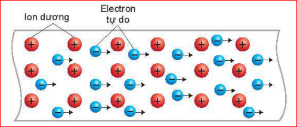
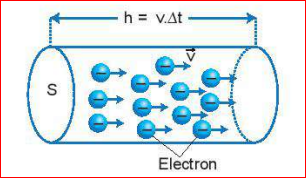
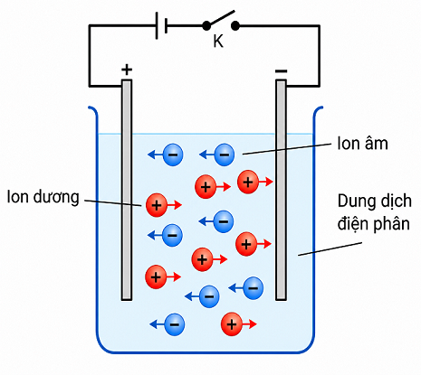

Thí nghiệm 1.
Chuẩn bị: 1 ampe kế, 1 biến trở, 1 bóng đèn, Nguồn điện, Dây nối, Khoá K, Nam châm điện.
Tiến hành:

Hình 22.1. Sơ đồ thí nghiệm khảo sát độ mạnh của dòng điện
1. Hãy nhận xét về độ sáng của bóng đèn Đ khi số chỉ của ampe kế tăng dần.
2. Theo em, thí nghiệm trên cho thấy cường độ dòng điện đặc trưng cho tính chất nào của dòng điện?
1. Khi số chỉ của ampe kế tăng dần, độ sáng của bóng đèn Đ cũng tăng lên (đèn sáng mạnh hơn).
2. Thí nghiệm cho thấy cường độ dòng điện đặc trưng cho độ mạnh yếu của dòng điện.
Thí nghiệm 2.
1. Hãy nhận xét về số ghim giấy mà nam châm hút được khi chỉ số của ampe kế tăng.
2. Từ kết quả thí nghiệm cho thấy cường độ dòng điện đặc trưng cho tính chất nào của dòng điện.
1. Khi chỉ số ampe kế tăng, số lượng ghim giấy mà nam châm hút được nhiều hơn so với ban đầu.
2. Từ kết quả thí nghiệm cho thấy cường độ dòng điện đặc trưng cho tác dụng từ (tác dụng mạnh yếu) của dòng điện.
Lượng điện tích chuyển qua tiết diện thẳng của dây dẫn trong một đơn vị thời gian càng lớn thì dòng điện chạy qua dây dẫn càng mạnh (Hình 22.2).
Trong vật lí, người ta gọi độ lớn của điện lượng chuyển qua tiết diện thẳng của một dây dẫn trong một đơn vị thời gian là cường độ dòng điện chạy qua dây dẫn, được xác định bằng công thức:
Trong công thức trên, đơn vị của cường độ dòng điện là ampe (kí hiệu là A), của điện lượng là Cu-lông (kí hiệu là C), của thời gian là giây (kí hiệu là s).
Từ công thức (22.1), ta rút ra:
Công thức (22.2) cho thấy ý nghĩa của đơn vị điện lượng Cu-lông: 1 Cu-lông là tổng điện lượng của các hạt mang điện chạy qua tiết diện thẳng của dây dẫn trong 1 s bởi dòng điện có cường độ 1 A.
Đơn vị của điện lượng: \( 1 \text{ C} = 1 \text{ A.s} \).

Hình 22.2. Các điện tích dịch chuyển qua tiết diện thẳng của vật dẫn theo phương vuông góc với tiết diện của vật dẫn
Trên một thiết bị dùng để nạp điện cho điện thoại di động có ghi thông số 10 000 mAh. Thông số 10 000 mAh cho biết điều gì?
Thông số 10 000 mAh (miliampe giờ) cho biết tổng điện lượng (dung lượng) mà thiết bị (sạc dự phòng) có thể cung cấp. Cụ thể, thiết bị có thể cung cấp một dòng điện có cường độ 10 000 mA (tương đương 10A) liên tục trong 1 giờ, hoặc dòng điện 1000 mA liên tục trong 10 giờ, trước khi cạn pin.
Trong kim loại tồn tại các electron không liên kết với nguyên tử, được gọi là electron tự do vì chúng có thể chuyển động tự do về mọi hướng. Khi dây dẫn được nối với nguồn điện thì trong dây dẫn xuất hiện điện trường. Dưới tác dụng của lực điện trường, các electron mang điện tích âm dịch chuyển có hướng ngược với hướng của điện trường, tạo ra dòng điện (Hình 22.3).
Người ta quy ước chiều dòng điện trong mạch là chiều từ cực dương sang cực âm của nguồn điện. Trong kim loại các electron tạo ra dòng điện dịch chuyển ngược chiều với chiều quy ước của dòng điện.

Hình 22.3. Sự tạo thành dòng điện trong kim loại
Nếu gọi:
Trong khoảng thời gian \( \Delta t \), số electron \( N \) chạy qua tiết diện thẳng của dây dẫn là: \( N=n \cdot S \cdot h \), trong đó \( h=v \cdot \Delta t \)

Hình 22.4. Electron chạy qua tiết diện thẳng của dây dẫn
Do vậy, điện lượng chuyển qua tiết diện thẳng của dây dẫn trong khoảng thời gian \( \Delta t \) là:
Theo định nghĩa cường độ dòng điện ở công thức (22.1), ta xác định được cường độ dòng điện chạy qua một dây dẫn kim loại như sau:
Một dây dẫn bằng kim loại, tiết diện tròn, có đường kính tiết diện là \( d=2 \text{ mm} \) có dòng điện \( I=5 \text{ A} \) chạy qua. Cho biết mật độ electron tự do là \( n=8,45 \cdot 10^{28} \text{ electron/m}^3 \). Hãy tính tốc độ dịch chuyển có hướng của các electron trong dây dẫn.
Giải:
Áp dụng công thức (22.3) ta có:
\( I = S \cdot n \cdot v \cdot e \)
\( \Rightarrow v = \frac{I}{n \cdot S \cdot e} = \frac{I}{n \cdot \frac{\pi d^2}{4} \cdot e} = \frac{4I}{n \cdot \pi \cdot d^2 \cdot e} \)
Thay số ta được:
\( v \approx 1,2 \cdot 10^{-4} \text{ m/s} = 0,12 \text{ mm/s}. \)
Trong dung dịch điện phân tồn tại các ion dương và ion âm. Khi đóng mạch điện trong bình điện phân, các ion trong dung dịch chính là các hạt mang điện (Hình 22.5).

Hình 22.5. Ion dương và ion âm dịch chuyển trong dung dịch tạo ra dòng điện
Bài 1: Tính điện lượng chuyển qua tiết diện thẳng của một dây dẫn trong thời gian 2 phút, biết cường độ dòng điện không đổi chạy qua dây dẫn là 0,5 A.
Đổi \( \Delta t = 2 \text{ phút} = 120 \text{ s} \).
Áp dụng công thức \( \Delta q = I \cdot \Delta t \)
\( \Rightarrow \Delta q = 0,5 \cdot 120 = 60 \text{ (C)} \).
Vậy điện lượng chuyển qua là 60 C.
Bài 2: Dòng điện chạy qua một dây dẫn có cường độ 1,6 A. Tính số electron dịch chuyển qua tiết diện thẳng của dây dẫn đó trong thời gian 1 giây. (Biết điện tích của electron \( e = 1,6 \cdot 10^{-19} \text{ C} \)).
Điện lượng chuyển qua tiết diện thẳng của dây dẫn trong 1 giây là:
\( \Delta q = I \cdot \Delta t = 1,6 \cdot 1 = 1,6 \text{ (C)} \).
Số electron chuyển qua tiết diện thẳng là:
\( N = \frac{\Delta q}{e} = \frac{1,6}{1,6 \cdot 10^{-19}} = 10^{19} \text{ (hạt)} \).
Bài 3: Một dây dẫn bằng đồng có tiết diện thẳng \( S = 1 \text{ mm}^2 \), có dòng điện cường độ \( I = 1,5 \text{ A} \) chạy qua. Cho mật độ electron tự do của đồng là \( n = 8,45 \cdot 10^{28} \text{ m}^{-3} \). Tính tốc độ dịch chuyển có hướng của các electron tự do trong dây dẫn đồng đó.
Đổi \( S = 1 \text{ mm}^2 = 10^{-6} \text{ m}^2 \).
Áp dụng công thức: \( I = S \cdot n \cdot v \cdot e \)
\( \Rightarrow v = \frac{I}{S \cdot n \cdot e} \)
\( \Rightarrow v = \frac{1,5}{10^{-6} \cdot 8,45 \cdot 10^{28} \cdot 1,6 \cdot 10^{-19}} \approx 1,1 \cdot 10^{-4} \text{ (m/s)} \).
Vậy tốc độ dịch chuyển có hướng là xấp xỉ \( 0,11 \text{ mm/s} \).